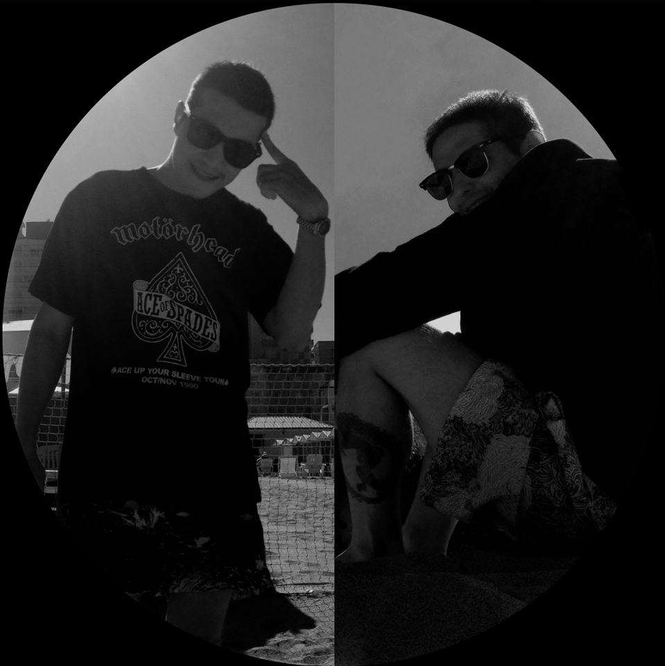

Deep-L & Deepness
Dark progressive house from Buenos Aires, with tribal weight and a lot of shadow.


Two sides
Notorium
3 EPs on Distants Records


Earlier, as Deep-L · 3 EPs


Bio
Deep-L & Deepness are brothers Lucas Ferraro (Deep-L) and Rodrigo Ferraro (Deepness) from Buenos Aires, the duo at the core of Distants Records since its early days. Their sound is dark progressive house: club percussion, tribal elements and deep, heavy atmospheres made for the late hours.
Across four albums on Distants — The Beginning, Music For Sick People, Blood, Sweat And Tears and The Power Back — they built a catalogue supported by Paul Oakenfold, Markus Schulz, Moshic and Lemon8, among others. Tracks like Native Gods, Calling The Shadows and Age Of Darkness became regulars in dark progressive sets, and their EP Voices Of Desert reached the Top 2 of the progressive house charts in 2012.
For five years they hosted Alone With A Rhythm on Beattunes, with mixes on Proton Radio and Insomnia FM, and played clubs across Argentina and Chile.
Today each one runs his own project — Lucas as Notorium, Rodrigo as Dare2Fly. Deep-L & Deepness comes back whenever they team up: in the studio for new releases and in the booth as DJs.
- Albums
The Beginning · Music For Sick People · Blood, Sweat And Tears · The Power Back
- EP
Voices Of Desert · Top 2 on the progressive house charts (2012)
- Supported by
Paul Oakenfold · Markus Schulz · Moshic · Lemon8 · among others
- Radio
Alone With A Rhythm on Beattunes (5 years) · Proton Radio · Insomnia FM · Pure FM
- Played in
Buenos Aires · Mar del Plata · Neuquén · San Martín de los Andes · Chile